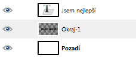
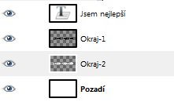
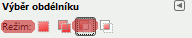
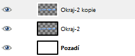
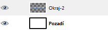

Web je již jen v režimu pro čtení a není možné přidávat nové komentáře nebo dotazy do fóra. Díky za přízeň.
Main menu
You are here
Nejlepší tapeta na světě
23. September 2009 - 20:28 — Lukáš
- Vytvoříme nový obrázek s takovým rozlišením, jaké používáme. Např. já volím 1440×900
- Napíšeme takový text, který nás vystihuje. Volím nápis „Jsem nejlepší“ vy ostatní budete zřejmě psát něco jako „Jsem looser“… Nezapomeneme zvolit nějakou pěknou barvu. Písmo Sans bold veliké cca 150px
- Vytvoříme novou vrstvu, nazveme ji „Okraj 1“
- Klepneme na naši textovou vrstvu pravým tlačítkem a zvolíme „Alfa do výběru“
- Přejdeme na menu Vybrat → Zvětšit a hodnotu nastavíme na 2px
- Přejdeme zpět na Okraj 1 a výběr vyplníme černou barvou. Následně zasuneme vrstvu Okraj 1 pod textovou vrstvu.
 - Necháme výběr stále aktivní a vytvoříme novou vrstvu s názvem „Okraj 2“
- Výběr znovu zvětšíme, tentokrát o 4px
- Barvu popředí nastavíme na bílou a jako barvu pozadí nastavíme šedou
- Přesuneme se na vrstvu Okraj 2 a těmito barvami pomocí nástroje Přechod vyplníme výběr (táhneme shora dolů)
- Vrstvu Okraj 2 zasuneme pod vrstvu Okraj 1
 - (stále máme aktivní výběr) Klepneme na nástroj „Obdélníkový výběr“ a nastavíme režim na „Ubrat z aktuálního výběru“
 - Přejdeme na vrstvu s textem a obdélníkovým výběrem ubereme výběr tak, aby byla označena jen vrchní polovina
- Zvolíme nástroj Přechod, režim nastavíme na „Popředí do průhlednosti“ a vyplníme aktuální výběr
- Sloučíme vrstvu s textem s vrstvou Okraj 1, následně sloučíme vrstvu Okraj 1 s vrstvou Okraj 2. Vrstvu Okraj 2 zkopírujeme
 - Přepneme se na kopii vrstvy Okraj 2, zvolíme nástroj „Překlopení“, typ překlopení nastavíme na „Svisle“, pomocí něj vrstvu převrátíme a posuneme tak, aby text byl pod původním. Viz. obrázek
- K vrstvě s překlopeným textem přidáme masku (Vrstvy → Maska → Přidat masku vrstvy), Výchozí stav masky nastavíme na „Bílá“
- Zvolíme nástroj Přechod, barvu popředí nastavíme na Bílou a barvu pozadí na Černou. Přechod nastavíme na „Popředí do pozadí“. Teď přetáhneme převrácený text, tím se nám vytvoří pěkný odlesk.
- Sloučíme kopii vrstvy Odlesk 2 s originálem
 - Barvy popředí i pozadí nastavíme na podobné těm, které jsme použili na text
- Přejdeme na Filtry → Vykreslení → Příroda → Plamen
- V okně „Plamen“ nastavíme barevnou mapu na „Vlastní přechod“. Měl by být nastavený režim „Popředí do pozadí“. Pokud není, přepneme se z okna plamen a v nástroji Přechod tento režim nastavíme.
- V okně Plamen klepneme na záložku „Kamera“ a přiblížení nastavíme na 1,44. Následně klepneme na „Upravit“. Vybereme jeden ze vzorců, který se nám zamlouvá a klepneme na Budiž, teď už jen stačí počkat, až se Plamen vykreslí a máme hotovo.
- Teď už je jen na Vás, jak výsledek doladíte ;)

{kind=link}
{kind=link}
{kind=link}
{kind=link}
{kind=link}
{kind=link}
{kind=link}
{kind=link}
{kind=link}
{kind=link}
Pro ty nechápavé přikládám video ze kterého jsem čerpal [EN] :)
Zdroj: www.youtube.com/watch
Kategorie:
Web je již ukončen. Nebude zde přibývat žádný nový obsah. Případné dotazy prosím na l.bacovsky(a)outlook.cz
Comments
Ve Photoshopu otázka několika
Máte pravdu, samotného mě
O to GUI ani tak nejde, dá se
no
Ahoj, mas to moc pekne nadpis
Ahoj, je to všechno dělané
Re: Ahoj, je to všechno dělané
Re: Nejlepší tapeta na světě
Re: Nejlepší tapeta na světě
Re: Nejlepší tapeta na světě
Re: Nejlepší tapeta na světě
Re: Nejlepší tapeta na světě
Re: Nejlepší tapeta na světě
Re: Nejlepší tapeta na světě
Re: Nejlepší tapeta na světě
Re: Nejlepší tapeta na světě
Re: Nejlepší tapeta na světě
Re: Nejlepší tapeta na světě
Re: Nejlepší tapeta na světě
Add new comment